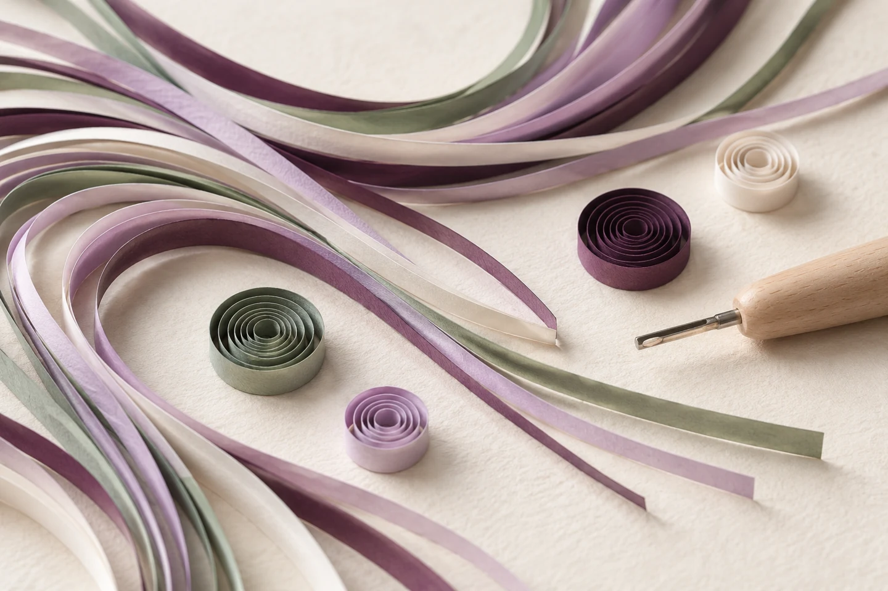
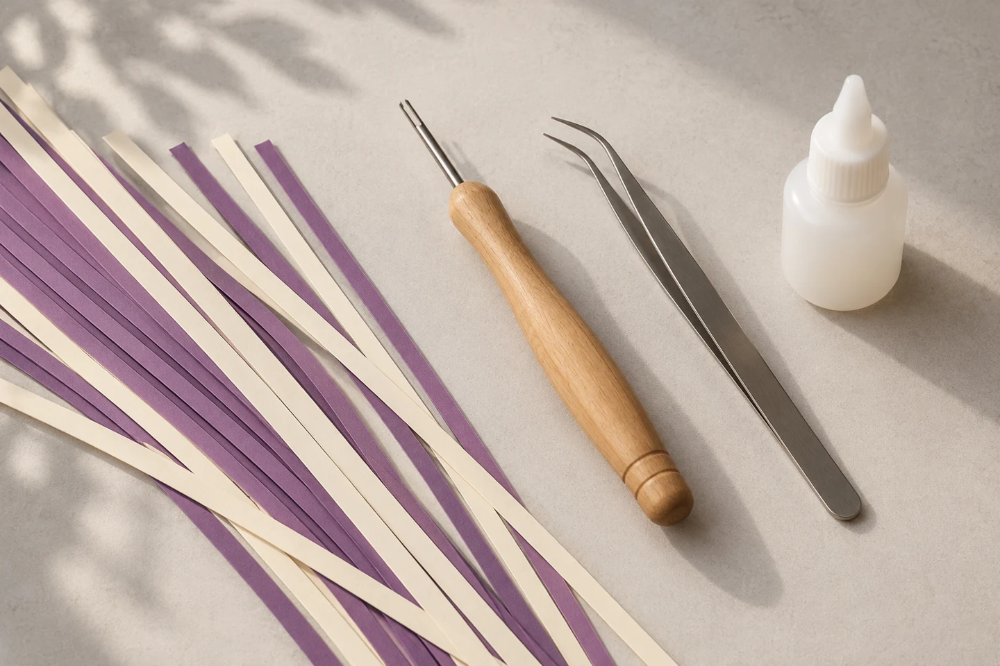
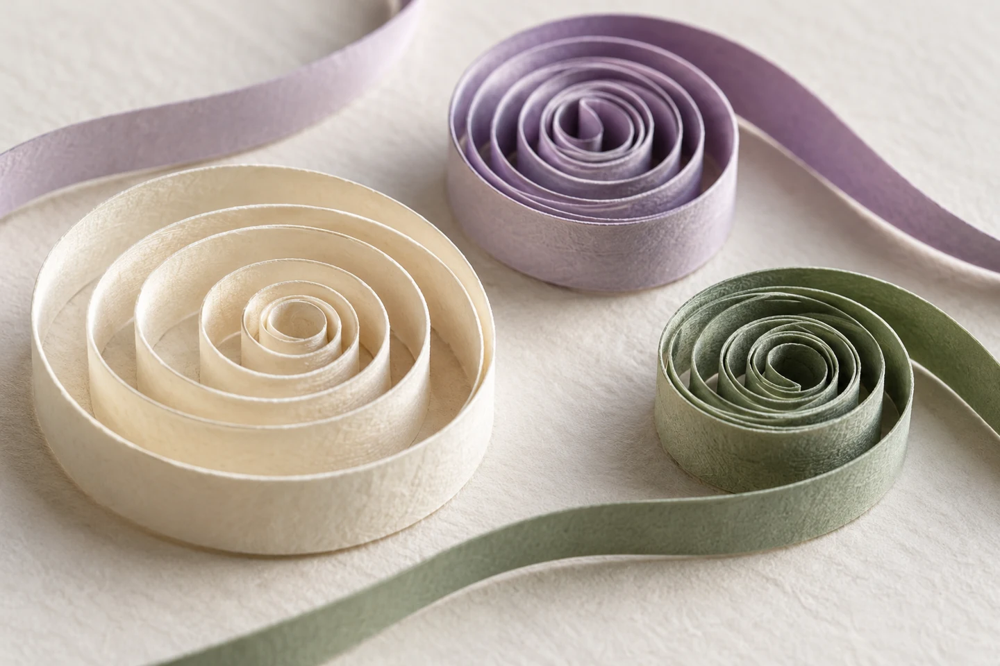

1DAY
公式記事から、内容を知る
掲載されている案内を見て、取り組んでみたい内容か確かめてみませんか。所要時間や進め方は、希望するレッスンについて相談できます。
1DAYの掲載記事を見る ↗Paper quilling · For adults
紙を巻く楽しさに出会ったら、
次は、自分に合う学び方を。
Plumeの公式記事から、選択肢をご紹介します。

Find your next step
2026年6月の公式記事に掲載された3つの学び方です。現在の受付状況・対象レベル・費用・開催日は、教室へご確認ください。
公式記事から、内容を知る
掲載されている案内を見て、取り組んでみたい内容か確かめてみませんか。所要時間や進め方は、希望するレッスンについて相談できます。
1DAYの掲載記事を見る ↗自分に合う進め方を相談
体験後の選択肢として、公式記事に案内されています。これまでの経験や作ってみたいものを伝え、対象レベルや内容を確かめてみましょう。
スタンダードの掲載記事を見る ↗基礎パーツから、自分のペースで
基礎パーツを段階的に練習しながら、自分のペースで進める教材として紹介されています。具体的な教材や進め方は、公式の記事でご覧いただけます。
モチーフキットの紹介を読む ↗掲載実績の紹介であり、3つすべてが現在募集中という意味ではありません。回数・修了条件・資格取得などを保証する案内ではありません。
A little closer to paper

必要な道具や準備物は、受講したい内容に合わせて教室へ確認できます。

体験で楽しかったことや、もう少し練習したいことを言葉にしてみましょう。
Let's think about your next lesson
気になる学び方をひとつ選んで。
まだ迷っていることも、そのまま相談のきっかけに。
公式案内の連絡先：plume910-mail@yahoo.co.jp
表示のみです。メールアプリは起動しません。